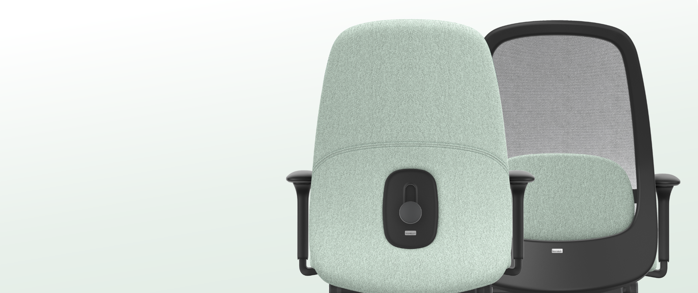
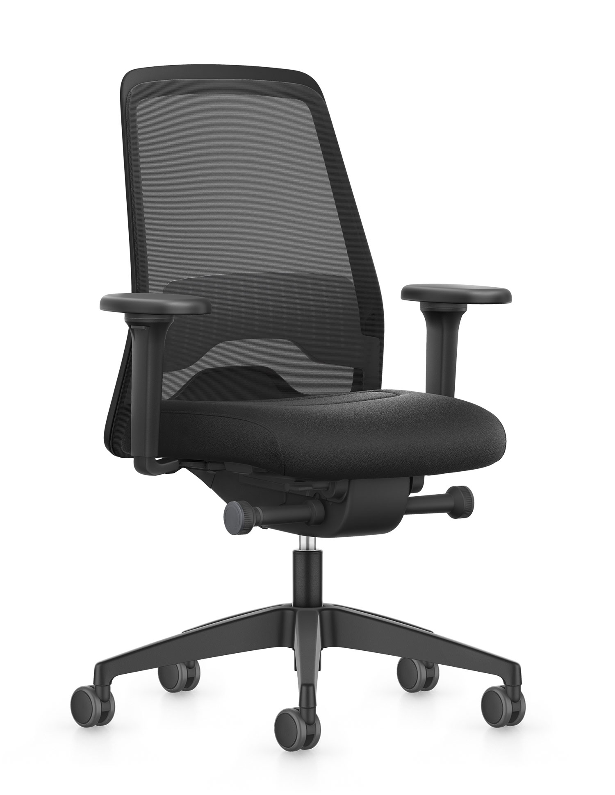
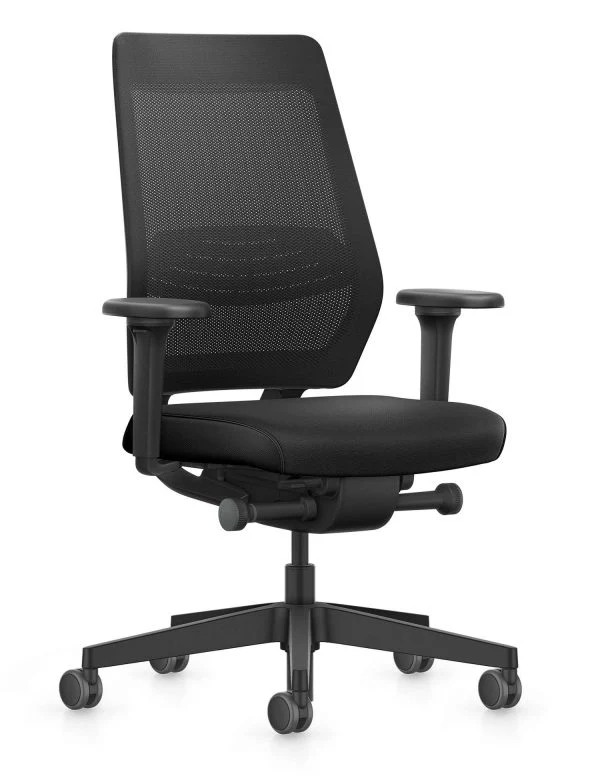
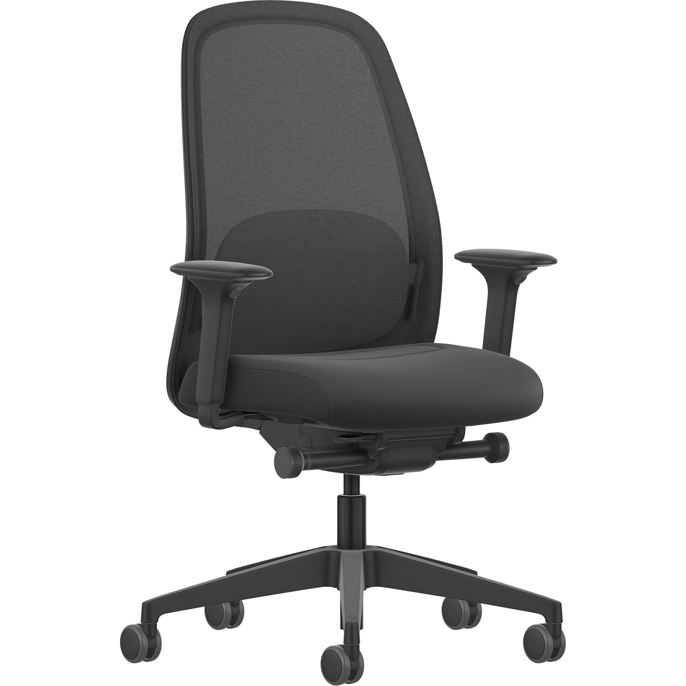
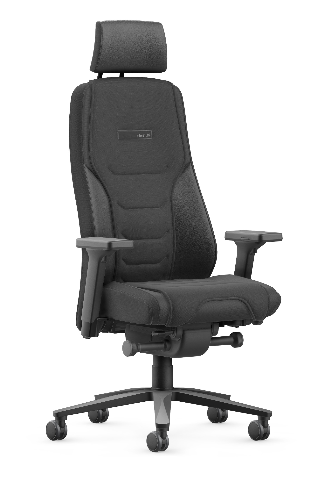
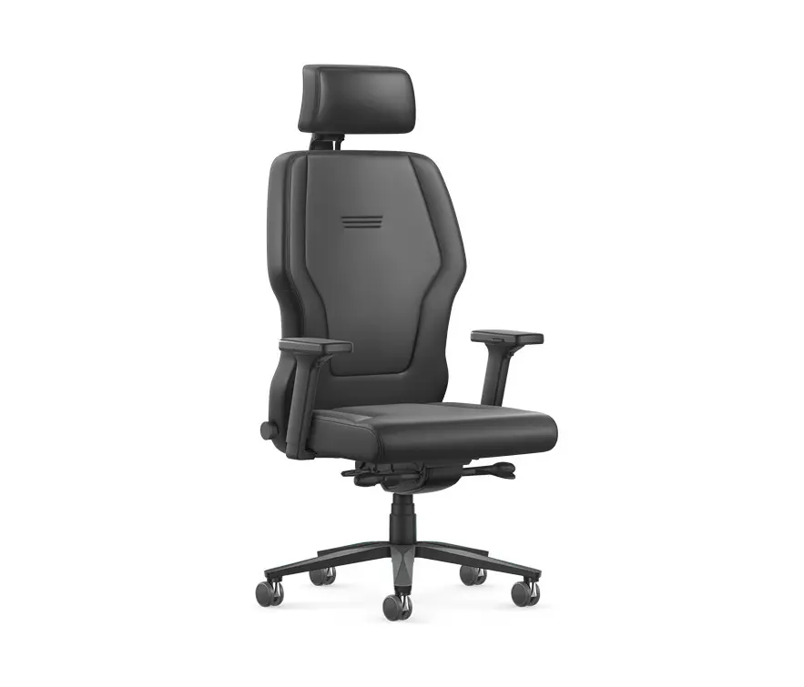
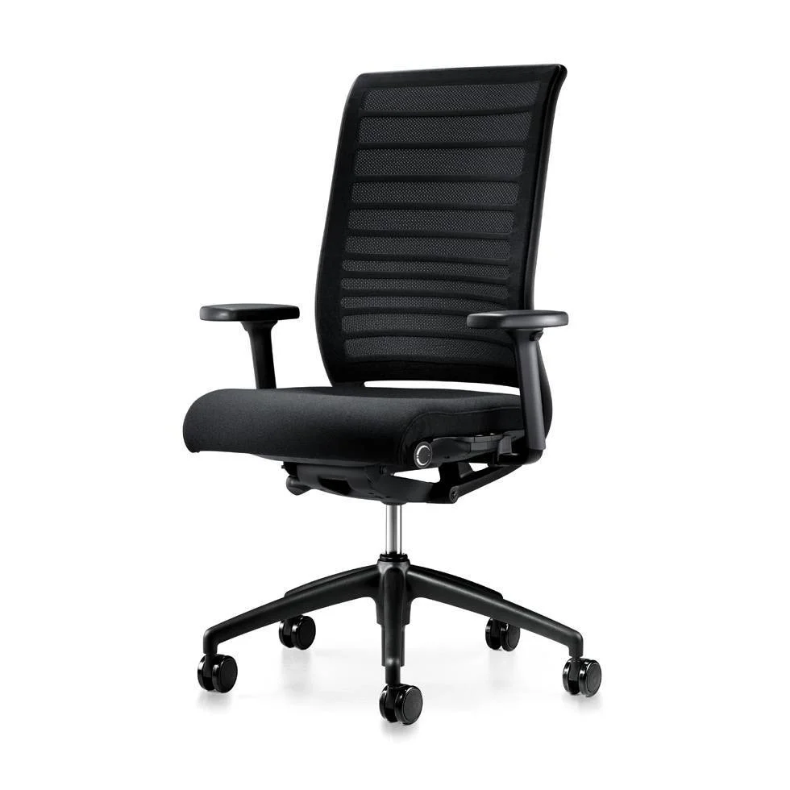
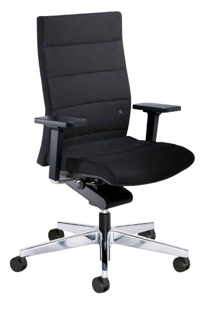
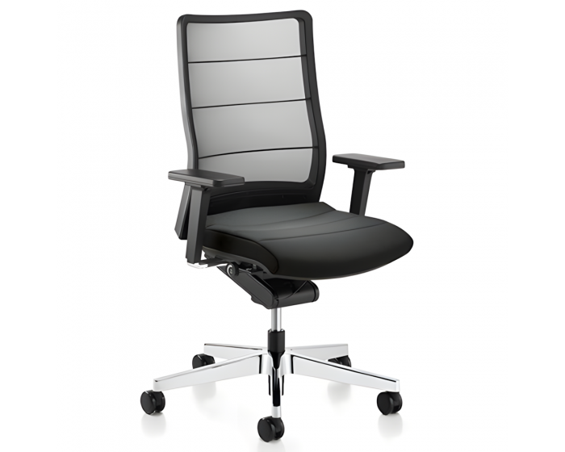

Interstuhl België
Ergonomische
Bureaustoelen
Comfort en design, zorgvuldig geselecteerd.
Onze categorieën
Kies uw categorie
Ontdek onze zorgvuldig geselecteerde categorieën van ergonomische bureaustoelen, ontworpen voor comfort en stijl.






Onze bestsellers
Stoelen van het jaar
Ontdek onze bestsellers, de meest geliefde ergonomische bureaustoelen die comfort en stijl combineren.




Made in Germany
Vervaardigd in Duitsland, waar vakmanschap en kwaliteit centraal staan.
2 jaar garantie
Elke stoel wordt geleverd met 2 jaar garantie op constructie en bekleding.
Gratis Levering en Montage
Geniet van gratis levering en montage van uw nieuwe bureaustoel.
Instapmodel
Starterstoelen
Ergonomische bureaustoelen aan een zeer scherpe prijs
Onze starterstoelen zijn meer dan de "standaard" bureaustoel. Deze ergonomische bureaustoelen zijn uitgevoerd met de noodzakelijke basisinstelmogelijkheden. Dus: degelijk zitten, aan een zeer scherpe prijs. De starterstoelen zijn ideaal voor algemeen thuisgebruik, openbare (computer)werkplekken en zijn perfect voor studenten op kot!
Toe aan iets meer of wil je gewoon alles uit de Every halen? Dan raden wij de Every Full Option aan: dezelfde look, maar een nieuw niveau in ergonomische ondersteuning en zitcomfort.
Gerecycleerd materiaal
Elke bureaustoel van Interstuhl is gemaakt van recycleerbaar materiaal. Door een bureaustoel te kopen van Interstuhl draagt u ook uw steentje bij.
Milieuvriendelijke verpakking
Wij zorgen ervoor dat elke bureaustoel in een milieuvriendelijke verpakking bij onze klanten terechtkomt.
Optimaal gebruik van materialen
Het optimaal gebruik van componenten zorgt ervoor dat er minder onnodige materialen geproduceerd worden.
Made in Germany
Elk product dat door Interstuhl gemaakt wordt, is geproduceerd in Duitsland.
BIMOS ergonomische labo- & industiestoelen
Ook op een meer technische gespecialiseerde werkplek moet men degelijk kunnen zitten. Aan deze stoelen worden daarom extra eisen omtrent veiligheid gesteld, zodat men niet alleen ergonomisch maar ook statisch- en/of stofvrij kan werken. Bimos is een Duits familiebedrijf gespecialiseerd in werkplaatsstoelen voor in het laboratorium en industrie. Zij ontwerpen en produceren ergonomische stoelen die zeer bijzondere werkomstandigheden moeten kunnen doorstaan. Bovendien voorzien de Bimos stoelen in de nodige ergonomische ondersteuning en comfort aan de gebruiker.

Laboratoriumstoel
Labsit

Cleanroomstoel
ESD Labster

Industriestoel
Neon

Naam stoel
hier

Naam stoel
hier

Naam stoel
hier
Meer van BIMOS
Ontdek nog veel meer labo- en industiestoelen van Bimos in onze online catalogus:
Bekijk volledig assortiment ›Gratis levering
Wij leveren ook aan huis. Onze levering is volledig gratis in België en Nederland. Onze bureaustoelen worden zowel geleverd aan particulieren als aan bedrijven.
Gemonteerd geleverd
Ons meubilair wordt volledig gemonteerd geleverd, tenzij anders overeengekomen.
Toonzaal & ophalen
Kom zeker eens een kijkje nemen in onze toonzaal. Stoelen die besteld zijn kunnen hier ook opgehaald worden.
10 jaar garantie
Alle bureaustoelen van Interstuhl hebben 10 jaar garantie. Interstuhl biedt deze garantie aan omdat ze zelfzekerd zijn van hun kwaliteit.
CertificaatVolledig aan u aangepast


Onze bureaustoelen worden volledig aan u aangepast. U kunt kiezen uit extra opties zoals een extra hoofdsteun, andere armsteunen en nog veel meer. Ook is elke bureaustoel heel flexibel en aanpasbaar.
Ontdek onze volledige CollectieBeleef de vrijheid en ga actiever zitten
Voor mensen die niet graag belemmerd worden door hun bureaustoel, en voor diegene die ook graag zittend in beweging blijven, zijn er stoelen met een zeer geavanceerd én flexibel frame. Zo geeft de Pure van Interstuhl de nodige ergonomische ondersteuning, zonder je te belemmeren in je bewegingsvrijheid.
Bekijk de Pure van Interstuhl
Haal nog meer uit je werkplek
Voor de volledig ergonomische ervaring ga je voor een zit-sta bureau. Flexwerken wordt de nieuwe normaal en vervangt het klassieke zittend kantoorwerk.
Om het gebrek aan beweging te compenseren en het verminderen van verzuimdagen, raden bedrijfsartsen de zogenaamde "ergonomie-formule" aan: 50% van de werkuren op kantoor zouden zittend, 25% staand en de rest van de tijd in beweging doorgebracht moeten worden.
Een grote collectie van onze zit-sta-bureaus beschikt over een elektrische motor die met een handig bedieningspaneel de tafelblad op de juiste hoogte brengt. Bovendien zijn deze zeer goed programmeerbaar en kun je zonder hindernis snel en gemakkelijk schakelen tussen zittend en staand werken.
Zitsta bureaus en ergonomische bureaustoelen zijn perfect complementair. Een zit-sta bureau leent zich uitermate goed bij de ideale ergonomische zithouding. Om ook de tijd die je staat wat te doorbreken kan je gebruik maken van een zit-sta hulp of kruk. Deze zijn verkrijgbaar in drie verschillende formaten. Zo heb je de nodige beweging én comfort en kun je gemakkelijk afwisselen.

Actieprijzen op
ergonomische stoelen
Al onze ergonomische bureaustoelen in promo zijn uit voorraad leverbaar tegen scherpe prijzen. De meeste modellen zijn full option — geschikt voor groot en klein, zelfinstellend of meegroeimodel. Kom vrijblijvend testen in onze toonzaal met meer dan 30 modellen, waar een ergonomie-expert u persoonlijk adviseert. Bestelt u online? Dan zorgen wij voor gratis montage en levering in heel België en Nederland.
Ergonomie & kwaliteit
Waarom kopen bij Interstuhl?
Tegenwoordig brengen mensen steeds meer tijd al zittend door. Dit vereist een hoge expertise in het ontwerp en de fabricage van bureaustoelen. Interstuhl is een Duits familiebedrijf dat voornamelijk op ergonomische bureaustoelen focust. Ze creëren ergonomische bureaustoelen voor elk gebruik en in elke prijsklasse met een functioneel ontwerp.
Ergonomische stoelen kunnen vrij ingesteld worden zodat deze optimaal aan ieders formaat kan worden afgestemd. Bovendien voorzien ze in de nodige ondersteuning voor een actieve zithouding. De stoelen zijn zo gemaakt dat de gebruiker optimaal zitcomfort ervaart.
Ergonomiegids
Onze services
We-Care
Ons circulaire basisabonnement van 10 jaar voor het gebruik en de zituren.
Re-Use
Next Life stoelen. Eersteklas zitcomfort tegen een aantrekkelijke prijs.
Re-Cycle
Als de stoel echt niet meer bruikbaar is, laten we hem lokaal recyclen.
Re-Design
We revitaliseren onze stoelen via het Re-design programma met partner Weder.
Schoonmaakbeurt
Onze professionele schoonmaakbeurt lost alle soorten vuiligheid op.
Onze Referenties

"Ik ben zeer tevreden met mijn nieuwe bureaustoel van Interstuhl. Het comfort is geweldig en de kwaliteit is uitstekend."
"Uitstekende service en snelle levering. De stoel staat prachtig in ons kantoor."
"Na jaren rugklachten eindelijk verlost dankzij de ErgoPlus. Aanrader voor iedereen!"
Officiële Verdeler
Wij zijn een officiële distributeur van Interstuhl in België en Nederland. Bestel uw favoriete artikelen via onze webshop met gratis verzending of kom een kijkje nemen in onze toonzaal.
Klantgericht
Elke persoon is uniek, dus is het van belang dat elke ergonomische stoel aangepast wordt aan uw lichaamsbouw en persoonlijke wensen.
Zoektocht
Wij helpen u graag met uw zoektocht naar de perfecte, betaalbare bureaustoel. Stel nu dat u uw bureaustoel al gekozen heeft, contacteer ons vrijblijvend voor een offerte.
Op locatie
Kom gerust eens langs in onze winkel te Bierbeek (regio Leuven), parkeer je auto op onze parking en kijk eens rond in onze ruime toonzaal.